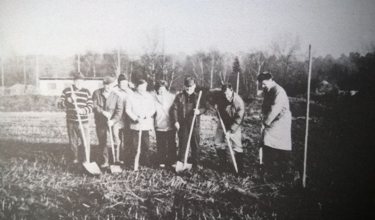

Unsere Geschichte
Wie alles begann:

Im Jahr 1924 fiel im Gasthaus „Traube“ der Entschluss, einen Obstbauverein zu gründen (das
Thema Garten kam erst im Laufe der Jahre hinzu). Es sollten gemeinsam Obstbäume und
Beerensträucher gekauft sowie die Mitglieder in der Pflanzung und Pflege beraten werden –
folglich ging es um die Versorgung der Einwohner Forsts mit regionalen und saisonalen Lebens
mitteln sowie um die Bildung, die erforderlich ist. Nach den Kriegsjahren wurde im Jahr 1946 ein
Neubeginn gewagt und hier kommt dann auch das „Wörtchen“ Gartenbau zum Vereinsnamen
dazu. Im Gewann „Schwanenwies“ entstand eine Zwetschgenanlage, im Gewann Almend wurden
289 Apfelbaumhochstämme gepflanzt. Das klingt nach viel Arbeit und war es sicherlich auch.
Gleichzeitig ist der Chronik zu entnehmen, dass viele Ausflüge gemacht wurden, teils als
Bildungsfahrten, teils als Familientage, sodass die Gemeinschaft gestärkt wurde. Es klingt, als ob
die Bildung fast nebenbei erfolgte. Ganz wichtig waren auch die Blumenschmuckwettbewerbe, wo
Einwohner*innen um den schönsten Vorgarten konkurrierten und geehrt wurden – das Ganze
unter dem Titel „unser Dorf soll schöner werden“ und später „Forst ist schön !“
Wenn man die Chroniken mal durchschaut – schon 1999 hat Reiner Blumhofer die
Landesverbandsnadel in Gold erhalten! Wir wissen gar nicht, lieber Reiner, wie wir Dich noch
ehren können. Jetzt sind ja wieder 2 ich lange hier im Verein tätig. Auch die anderen Vorstandsmitglieder wie Heidi
für s langjährige Dabeisein, Ute für den Überblick in allen Bereichen, Jochen für die Bereitschaft als Erster Vorstand Verantwortung zu übernehmen, Mihaela für die Organisation der Hausvermietungen,
Christina für s Geld und Mitgliederverwaltung im Überblick.
Doch noch einmal zurück in die Vergangenheit: Das Gelände des Obst- und Gartenbauvereins war tip top gepflegt, es gab eine Baumallee von der Kronauer Allee herunter bis zum Vereinshaus. Wer das Gelände kannte, wie es einmal war, der fühlt vermutlich Wehmut angesichts dessen, dass nun die Hände nicht ausreichen für die viele Arbeit, die getan werden müsste. Unser Verein hat sich dem Erhalt und der Förderung von Natur und Umwelt – insbesondere der Artenvielfalt und dem Erhalt und der Unterstützung von Wild- und Honigbienen, die eine unverzichtbare Rolle bei der Bestäubung unserer Pflanzen und Obstbäume spielen, verschrieben. Für mich als Neuling war das Gelände allerdings vom ersten Moment an und ist es jetzt noch immer ein wunderschönes und schützenswertes Kleinod. Die Vielfalt an Pflanzen und Tieren, die sich hier finden lassen, sowie das langjährige Wissen und die Menschen, die man hier trifft und die sich wie die Menschen seit 100 Jahren für den Verein einsetzen sind für Forst einmalig und sollten noch viele weitere Jahre erhalten werden.
In den letzten Jahren haben wir jedoch festgestellt, dass das klassische Vereinsleben, wie wir es
vielleicht aus früheren Zeiten kennen, immer weniger gefragt ist. Die Gründe dafür sind vielfältig:
Doch, wie können wir unserem Verein eine Zukunft sichern und gleichzeitig neue Wege
beschreiten.
Unsere Vision ist klar: Wir möchten den Verein breiter aufstellen und unsere Räumlichkeiten als attraktiven Veranstaltungsort für die Öffentlichkeit anbieten und damit den Verein auch finanziell stärken, insbesondere zur Instandsetzung und zur Weiterentwicklung. Dabei haben wir bereits erste Schritte unternommen und unser Angebot um verschiedene Workshops und Events erweitert. Sei es Floristikworkshops, Weinverkostungen, Malkurse oder Fotokurse – unsere Räume und vor allen Dingen unser Gelände bieten die perfekte Kulisse für kreative und lehrreiche Veranstaltungen. Wir wollen gezielt junge Familien ansprechen und diese zu unseren Arbeitseinsätzen an Samstagen einladen. Auch die Präsenz auf Social Media, seit Juni 2024, insbesondere auf Instagram, ist ein wichtiger Schritt, um jüngere Zielgruppen zu erreichen. Wir sind davon überzeugt, dass wir durch diese Maßnahmen nicht nur neue Mitglieder gewinnen, sondern auch das Interesse und die Unterstützung für unseren Verein neu entfachen können. Unser Ziel ist es, den Verein als lebendigen und dynamischen Ort zu gestalten, der sich den Herausforderungen der modernen Welt stellt, ohne die Traditionen und Werte, die uns ausmachen, zu vergessen.
Ein herzliches Dankeschön an alle, die uns auf diesem Weg unterstützen und begleitet haben.
Lassen Sie uns gemeinsam auf die nächsten hundert Jahre blicken – voller Engagement, Freude und
neuen Möglichkeiten.